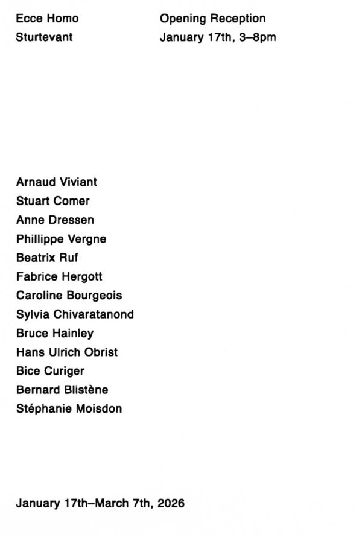

Sturtevant: Ecce Homo
SHANGHAI SEMINARY presents Ecce Homo, an exhibition of Sturtevant, featuring l’Abécédaire de Deleuze—a video installation by the artist premiered in late 2012 at Galerie Thaddaeus Ropac in Paris.
According to the then press release by Sturtevant and her gallery, this work “is derived to bring into being the higher power of words and the tight formal format is to focus on space as related to content. Three chairs will be equally spaced facing the far wall of the gallery space, with three monitors placed directly in front of the chairs: giving a close view of the participants who are critics, museum directors, writers and ‘thinkers’ of the art world. At the same time, a still image of the subjects will be projected large scale on the facing wall. Thus throwing cybernetics and its sidekick digital to blatantly display its trickster action of reversing hierarchies with its disastrous entrenched mental sets; reversing distance from distance to place.”
Sturtevant was born in Lakewood, Ohio, USA, on August 23rd, 1924, and died in Paris, France, on May 7th, 2014. She holds a B.A. from the University of Iowa (1947) and an M.A. from Columbia University (1975), both in Psychology. She was awarded the Golden Lion for lifetime achievement at the 54th Venice Biennale in 2011, and was appointed to the rank of Chevalier de la Légion d’honneur in France in 2013. Throughout her dashing career, she met many personae and some of them appear in l’Abécédaire de Deleuze:
Arnaud Viviant
Stuart Comer
Anne Dressen
Phillippe Vergne
Beatrix Ruf